f(x,y) = x^2 + y^2 - 2^2f (generic function with 1 method)This section uses these add-on packages:
using CalculusWithJulia
using Plots
using Roots
using SymPyAn equation in \(y\) and \(x\) is an algebraic expression involving an equality with two (or more) variables. An example might be \(x^2 + y^2 = 1\).
The solutions to an equation in the variables \(x\) and \(y\) are all points \((x,y)\) which satisfy the equation.
The graph of an equation is just the set of solutions to the equation represented in the Cartesian plane.
With this definition, the graph of a function \(f(x)\) is just the graph of the equation \(y = f(x)\). In general, graphing an equation is more complicated than graphing a function. For a function, we know for a given value of \(x\) what the corresponding value of \(f(x)\) is through evaluation of the function. For equations, we may have \(0\), \(1\) or more \(y\) values for a given \(x\) and even more problematic is we may have no rule to find these values.
There are a few options for plotting equations in Julia. We will use a function from the ImplicitPlots package that is in the CalculusWithJulia package in this section, but note both ImplicitEquations and IntervalConstraintProgramming offer alternatives that are a bit more flexible.
To plot an implicit equation using implicit_plot requires expressing the relationship in terms of a function, and then plotting the equation f(x,y) = 0. In practice this simply requires all the terms be moved to one side of an equals sign.
To plot the circle of radius \(2\), or the equations \(x^2 + y^2 = 2^2\) we would move all terms to one side \(x^2 + y^2 - 2^2 = 0\) and then express the left hand side through a function:
f(x,y) = x^2 + y^2 - 2^2f (generic function with 1 method)This function is then is passed to the implicit_plot function, which works with Plots to render the graphic:
implicit_plot(f)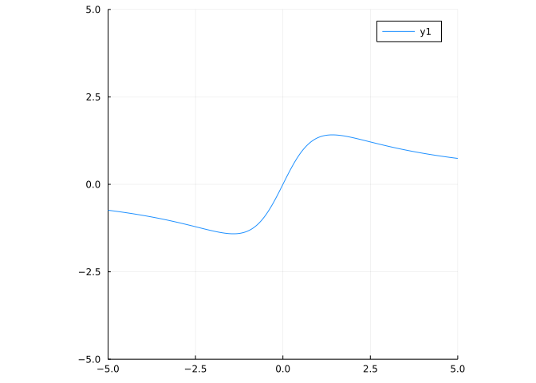
The f is a function of two variables, used here to express one side of an equation. Julia makes this easy to do - just make sure two variables are in the signature of f when it is defined. Using functions like this, we can express our equation in the form \(f(x,y) = c\) or, more generally, as \(f(x,y) = g(x,y)\). The latter of which can be expressed as \(h(x,y) = f(x,y) - g(x,y) = 0\). That is, only the form \(f(x,y)=0\) is needed to represent an equation.
There are two different styles in Julia to add simple plot recipes. ImplicitPlots adds a new plotting function (implicit_plot); alternatively many packages add a new recipe for the generic plot method using new types. (For example, SymPy has a plot recipe for symbolic types.
Of course, more complicated equations are possible and the steps are similar - only the function definition is more involved. For example, the Devils curve has the form
\[ y^4 - x^4 + ay^2 + bx^2 = 0 \]
Here we draw the curve for a particular choice of \(a\) and \(b\). For illustration purposes, a narrower viewing window is specified below using xlims and ylims:
a,b = -1,2
f(x,y) = y^4 - x^4 + a*y^2 + b*x^2
implicit_plot(f; xlims=(-3,3), ylims=(-3,3), legend=false)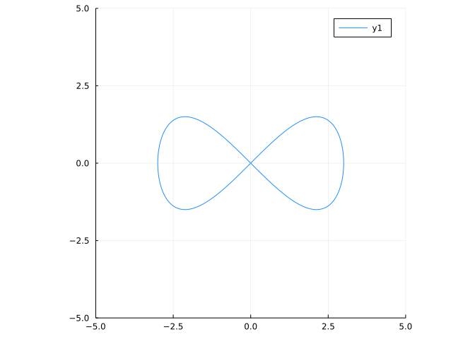
The graph \(x^2 + y^2 = 1\) has well-defined tangent lines at all points except \((-1,0)\) and \((0, 1)\) and even at these two points, we could call the vertical lines \(x=-1\) and \(x=1\) tangent lines. However, to recover the slope of these tangent lines would need us to express \(y\) as a function of \(x\) and then differentiate that function. Of course, in this example, we would need two functions: \(f(x) = \sqrt{1-x^2}\) and \(g(x) = - \sqrt{1-x^2}\) to do this completely.
In general though, we may not be able to solve for \(y\) in terms of \(x\). What then?
The idea is to assume that \(y\) is representable by some function of \(x\). This makes sense, moving on the curve from \((x,y)\) to some nearby point, means changing \(x\) will cause some change in \(y\). This assumption is only made locally - basically meaning a complicated graph is reduced to just a small, well-behaved, section of its graph.
With this assumption, asking what \(dy/dx\) is has an obvious meaning - what is the slope of the tangent line to the graph at \((x,y)\). (The assumption eliminates the question of what a tangent line would mean when a graph self intersects.)
The method of implicit differentiation allows this question to be investigated. It begins by differentiating both sides of the equation assuming \(y\) is a function of \(x\) to derive a new equation involving \(dy/dx\).
For example, starting with \(x^2 + y^2 = 1\), differentiating both sides in \(x\) gives:
\[ 2x + 2y\cdot \frac{dy}{dx} = 0. \]
The chain rule was used to find \((d/dx)(y^2) = [y(x)^2]' = 2y \cdot dy/dx\). From this we can solve for \(dy/dx\) (the resulting equations are linear in \(dy/dx\), so can always be solved explicitly):
\[ \frac{dy}{dx} = -\frac{x}{y}. \]
This says the slope of the tangent line depends on the point \((x,y)\) through the formula \(-x/y\).
As a check, we compare to what we would have found had we solved for \(y= \sqrt{1 - x^2}\) (for \((x,y)\) with \(y \geq 0\)). We would have found: \(dy/dx = 1/2 \cdot 1/\sqrt{1 - x^2} \cdot (-2x)\). Which can be simplified to \(-x/y\). This should show that the method above - assuming \(y\) is a function of \(x\) and differentiating - is not only more general, but can even be easier.
The name - implicit differentiation - comes from the assumption that \(y\) is implicitly defined in terms of \(x\). According to the Implicit Function Theorem the above method will work provided the curve has sufficient smoothness near the point \((x,y)\).
Consider the serpentine equation
\[ x^2y + a\cdot b \cdot y - a^2 \cdot x = 0, \quad a\cdot b > 0. \]
For \(a = 2, b=1\) we have the graph:
a, b = 2, 1
f(x,y) = x^2*y + a * b * y - a^2 * x
implicit_plot(f)We can see that at each point in the viewing window the tangent line exists due to the smoothness of the curve. Moreover, at a point \((x,y)\) the tangent will have slope \(dy/dx\) satisfying:
\[ 2xy + x^2 \frac{dy}{dx} + a\cdot b \frac{dy}{dx} - a^2 = 0. \]
Solving, yields:
\[ \frac{dy}{dx} = \frac{a^2 - 2xy}{ab + x^2}. \]
In particular, the point \((0,0)\) is always on this graph, and the tangent line will have positive slope \(a^2/(ab) = a/b\).
The eight curve has representation
\[ x^4 = a^2(x^2-y^2), \quad a \neq 0. \]
A graph for \(a=3\) shows why it has the name it does:
a = 3
f(x,y) = x^4 - a^2*(x^2 - y^2)
implicit_plot(f)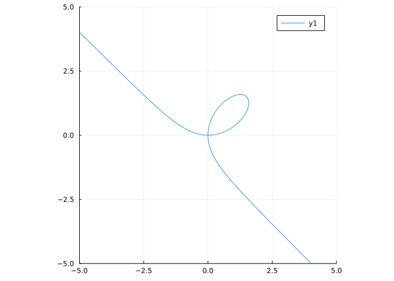
The tangent line at \((x,y)\) will have slope, \(dy/dx\) satisfying:
\[ 4x^3 = a^2 \cdot (2x - 2y \frac{dy}{dx}). \]
Solving gives:
\[ \frac{dy}{dx} = -\frac{4x^3 - a^2 \cdot 2x}{a^2 \cdot 2y}. \]
The point \((3,0)\) can be seen to be a solution to the equation and should have a vertical tangent line. This also is reflected in the formula, as the denominator is \(a^2\cdot 2 y\), which is \(0\) at this point, whereas the numerator is not.
The quotient rule can be hard to remember, unlike the product rule. No reason to despair, the product rule plus implicit differentiation can be used to recover the quotient rule. Suppose \(y=f(x)/g(x)\), then we could also write \(y g(x) = f(x)\). Differentiating implicitly gives:
\[ \frac{dy}{dx} g(x) + y g'(x) = f'(x). \]
Solving for \(dy/dx\) gives:
\[ \frac{dy}{dx} = \frac{f'(x) - y g'(x)}{g(x)}. \]
Not quite what we expect, perhaps, but substituting in \(f(x)/g(x)\) for \(y\) gives us the usual formula:
\[ \frac{dy}{dx} = \frac{f'(x) - \frac{f(x)}{g(x)} g'(x)}{g(x)} = \frac{f'(x) g(x) - f(x) g'(x)}{g(x)^2}. \]
In this example we mix notations using \(g'(x)\) to represent a derivative of \(g\) with respect to \(x\) and \(dy/dx\) to represent the derivative of \(y\) with respect to \(x\). This is done to emphasize the value that we are solving for. It is just a convention though, we could just as well have used the “prime” notation for each.
Let’s see how to add a graph of a tangent line to the graph of an equation. Tangent lines are tangent at a point, so we need a point to discuss.
Returning to the equation for a circle, \(x^2 + y^2 = 1\), let’s look at \((\sqrt{2}/2, - \sqrt{2}/2)\). The derivative is \(-y/x\), so the slope at this point is \(1\). The line itself has equation \(y = b + m \cdot (x-a)\). The following represents this in Julia:
F(x,y) = x^2 + y^2 - 1
a,b = sqrt(2)/2, -sqrt(2)/2
m = -a/b
tl(x) = b + m * (x-a)
implicit_plot(F, xlims=(-2, 2), ylims=(-2, 2), aspect_ratio=:equal)
plot!(tl)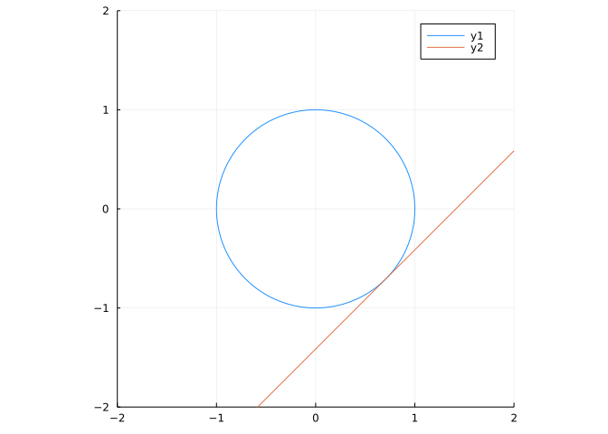
We added both the implicit plot of \(F\) and the tangent line to the graph at the given point.
When we assume \(y\) is a function of \(x\), it may not be feasible to actually find the function algebraically. However, in many cases one can be found numerically. Suppose \(G(x,y) = c\) describes the equation. Then for a fixed \(x\), \(y(x)\) solves \(G(x,y(x))) - c = 0\), so \(y(x)\) is a zero of a known function. As long as we can piece together which \(y\) goes with which, we can find the function.
For example, the folium of Descartes has the equation
\[ x^3 + y^3 = 3axy. \]
Setting \(a=1\) we have the graph:
𝒂 = 1
G(x,y) = x^3 + y^3 - 3*𝒂*x*y
implicit_plot(G)We can solve for the lower curve, \(y\), as a function of \(x\), as follows:
y1(x) = minimum(find_zeros(y->G(x,y), -10, 10)) # find_zeros from `Roots`y1 (generic function with 1 method)This gives the lower part of the curve, which we can plot with:
plot(y1, -5, 5)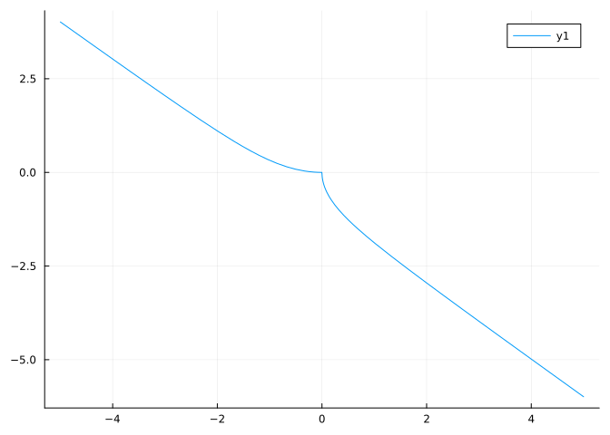
Though, in this case, the cubic equation would admit a closed-form solution, the approach illustrated applies more generally.
SymPy can be used to perform implicit differentiation. The three steps are similar: we assume \(y\) is a function of \(x\), locally; differentiate both sides; solve the result for \(dy/dx\).
Let’s do so for the Trident of Newton, which is represented in Cartesian form as follows:
\[ xy = cx^3 + dx^2 + ex + h. \]
To approach this task in SymPy, we begin by defining our symbolic expression. For now, we keep the parameters as symbolic values:
@syms a b c d x y
ex = x*y - (a*c^3 + b*x^2 + c*x + d)To express that y is a locally a function of x, we use a “symbolic function” object:
@syms u()(u,)The object u is the symbolic function, and u(x) a symbolic expression involving a symbolic function. This is what we will use to refer to y.
Assume \(y\) is a function of \(x\), called u(x), this substitution is just a renaming:
ex1 = ex(y => u(x))At this point, we differentiate in x:
ex2 = diff(ex1, x)The next step is solve for \(dy/dx\) - the lone answer to the linear equation - which is done as follows:
dydx = diff(u(x), x)
ex3 = solve(ex2, dydx)[1] # pull out lone answer with [1] indexingAs this represents an answer in terms of u(x), we replace that term with the original variable:
dydx₁ = ex3(u(x) => y)If x and y are the variable names, this function will combine the steps above:
function dy_dx(eqn, x, y)
@syms u()
eqn1 = eqn(y => u(x))
eqn2 = solve(diff(eqn1, x), diff(u(x), x))[1]
eqn2(u(x) => y)
enddy_dx (generic function with 1 method)Let \(a = b = c = d = 1\), then \((1,4)\) is a point on the curve. We can draw a tangent line to this point with these commands:
H = ex(a=>1, b=>1, c=>1, d=>1)
x0, y0 = 1, 4
𝒎 = dydx₁(x=>1, y=>4, a=>1, b=>1, c=>1, d=>1)
implicit_plot(lambdify(H); xlims=(-5,5), ylims=(-5,5), legend=false)
plot!(y0 + 𝒎 * (x-x0))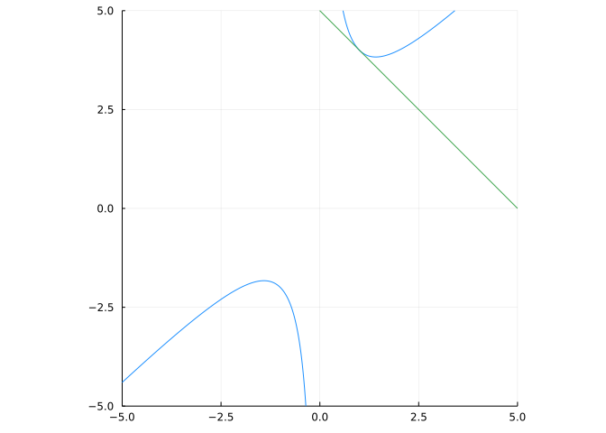
Basically this includes all the same steps as if done “by hand.” Some effort could have been saved in plotting, had values for the parameters been substituted initially, but not doing so shows their dependence in the derivative.
The use of lambdify(H) is needed to turn the symbolic expression, H, into a function.
While SymPy itself has the plot_implicit function for plotting implicit equations, this works only with PyPlot, not Plots, so we use the implicit_plot function from the ImplicitPlots package in these examples.
Implicit differentiation can be used to find \(d^2y/dx^2\) or other higher-order derivatives. At each stage, the same technique is applied. The only “trick” is that some simplifications can be made.
For example, consider \(x^3 - y^3=3\). To find \(d^2y/dx^2\), we first find \(dy/dx\):
\[ 3x^2 - (3y^2 \frac{dy}{dx}) = 0. \]
We could solve for \(dy/dx\) at this point - it always appears as a linear factor - to get:
\[ \frac{dy}{dx} = \frac{3x^2}{3y^2} = \frac{x^2}{y^2}. \]
However, we differentiate the first equation, as we generally try to avoid the quotient rule
\[ 6x - (6y \frac{dy}{dx} \cdot \frac{dy}{dx} + 3y^2 \frac{d^2y}{dx^2}) = 0. \]
Again, if must be that \(d^2y/dx^2\) appears as a linear factor, so we can solve for it:
\[ \frac{d^2y}{dx^2} = \frac{6x - 6y (\frac{dy}{dx})^2}{3y^2}. \]
One last substitution for \(dy/dx\) gives:
\[ \frac{d^2y}{dx^2} = \frac{-6x + 6y (\frac{x^2}{y^2})^2}{3y^2} = -2\frac{x}{y^2} + 2\frac{x^4}{y^5} = 2\frac{x}{y^2}(1 - \frac{x^3}{y^3}) = 2\frac{x}{y^5}(y^3 - x^3) = 2 \frac{x}{y^5}(-3). \]
It isn’t so pretty, but that’s all it takes.
To visualize, we plot implicitly and notice that:
K(x,y) = x^3 - y^3 - 3
implicit_plot(K, xlims=(-3, 3), ylims=(-3, 3))The same problem can be done symbolically. The steps are similar, though the last step (replacing \(x^3 - y^3\) with \(3\)) isn’t done without explicitly asking.
@syms x y u()
eqn = K(x,y) - 3
eqn1 = eqn(y => u(x))
dydx = solve(diff(eqn1,x), diff(u(x), x))[1] # 1 solution
d2ydx2 = solve(diff(eqn1, x, 2), diff(u(x),x, 2))[1] # 1 solution
eqn2 = d2ydx2(diff(u(x), x) => dydx, u(x) => y)
simplify(eqn2)As mentioned, an inverse function for \(f(x)\) is a function \(g(x)\) satisfying: \(y = f(x)\) if and only if \(g(y) = x\) for all \(x\) in the domain of \(f\) and \(y\) in the range of \(f\).
In short, both \(f \circ g\) and \(g \circ f\) are identify functions on their respective domains. As inverses are unique, their notation, \(f^{-1}(x)\), reflects the name of the related function.
The chain rule can be used to give the derivative of an inverse function when applied to \(f(f^{-1}(x)) = x\). Solving gives, \([f^{-1}(x)]' = 1 / f'(f^{-1}(x))\).
This is great - if we can remember the rules. If not, sometimes implicit differentiation can also help.
Consider the inverse function for the tangent, which exists when the domain of the tangent function is restricted to \((-\pi/2, \pi/2)\). The function solves \(y = \tan^{-1}(x)\) or \(\tan(y) = x\). Differentiating this yields:
\[ \sec(y)^2 \frac{dy}{dx} = 1. \]
Or \(dy/dx = 1/\sec^2(y)\).
But \(\sec(y)^2 = 1 + \tan(y)^2 = 1 + x^2\), as can be seen by right-triangle trigonometry. This yields the formula \(dy/dx = [\tan^{-1}(x)]' = 1 / (1 + x^2)\).
For a more complicated example, suppose we have a moving trajectory \((x(t), y(t))\). The angle it makes with the origin satisfies
\[ \tan(\theta(t)) = \frac{y(t)}{x(t)}. \]
Suppose \(\theta(t)\) can be defined in terms of the inverse to some function (\(\tan^{-1}(x)\)). We can differentiate implicitly to find \(\theta'(t)\) in terms of derivatives of \(y\) and \(x\):
\[ \sec^2(\theta(t)) \cdot \theta'(t) = \frac{y'(t) x(t) - y(t) x'(t)}{x(t))^2}. \]
But \(\sec^2(\theta(t)) = (r(t)/x(t))^2 = (x(t)^2 + y(t)^2) / x(t)^2\), so moving to the other side the secant term gives an explicit, albeit complicated, expression for the derivative of \(\theta\) in terms of the functions \(x\) and \(y\):
\[ \theta'(t) = \frac{x^2}{x^2(t) + y^2(t)} \cdot \frac{y'(t) x(t) - y(t) x'(t)}{x(t))^2} = \frac{y'(t) x(t) - y(t) x'(t)}{x^2(t) + y^2(t)}. \]
This could have been made easier, had we leveraged the result of the previous example.
Many problems are best done with implicit derivatives. A video showing such a problem along with how to do it analytically is here.
This video starts with a simple question:
If you have a rope and heavy ring, where will the ring position itself due to gravity?
Well, suppose you hold the rope in two places, which we can take to be \((0,0)\) and \((a,b)\). Then let \((x,y)\) be all the possible positions of the ring that hold the rope taught. Then we have this picture:
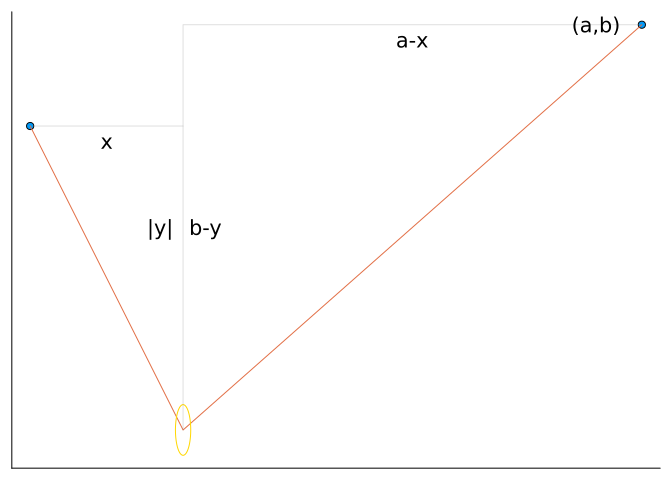
Since the length of the rope does not change, we must have for any admissible \((x,y)\) that:
\[ L = \sqrt{x^2 + y^2} + \sqrt{(a-x)^2 + (b-y)^2}, \]
where these terms come from the two hypotenuses in the figure, as computed through Pythagorean’s theorem.
If we assume that the ring will minimize the value of y subject to this constraint, can we solve for y?
We create a function to represent the equation:
F₀(x, y, a, b) = sqrt(x^2 + y^2) + sqrt((a-x)^2 + (b-y)^2)F₀ (generic function with 1 method)To illustrate, we need specific values of \(a\), \(b\), and \(L\):
𝐚, 𝐛, 𝐋 = 3, 3, 10 # L > sqrt{a^2 + b^2}
F₀(x, y) = F₀(x, y, 𝐚, 𝐛)F₀ (generic function with 2 methods)Our values \((x,y)\) must satisfy \(f(x,y) = L\). Let’s graph:
implicit_plot((x,y) -> F₀(x,y) - 𝐋, xlims=(-5, 7), ylims=(-5, 7))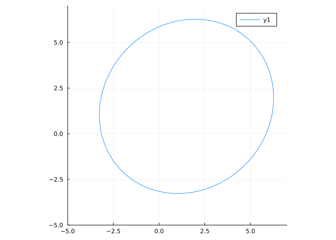
The graph is an ellipse, though slightly tilted.
Okay, now to find the lowest point. This will be when the derivative is \(0\). We solve by assuming \(y\) is a function of \(x\) called u. We have already defined symbolic variables a, b, x, and y, here we define L:
@syms L(L,)Then
eqn = F₀(x,y,a,b) - Leqn_1 = diff(eqn(y => u(x)), x)
eqn_2 = solve(eqn_1, diff(u(x), x))[1]
dydx₂ = eqn_2(u(x) => y)We are looking for when the tangent line has \(0\) slope, or when dydx is \(0\):
cps = solve(dydx₂, x)2-element Vector{Sym}:
0.2⋅y
0.2*y/(8.0*y - 1.0)There are two answers, as we could guess from the graph, but we want the one for the smallest value of \(y\), which is the second.
The values of dydx depend on any pair \((x,y)\), but our solution must also satisfy the equation. That is for our value of \(x\), we need to find the corresponding \(y\). This should be possible by substituting:
eqn1 = eqn(x => cps[2])We would try to solve eqn1 for y with solve(eqn1, y), but SymPy can’t complete this problem. Instead, we will approach this numerically using find_zero from the Roots package. We make the above a function of y alone
eqn2 = eqn1(a=>3, b=>3, L=>10)
ystar = find_zero(eqn2, -3)-3.4872035192968935Okay, now we need to put this value back into our expression for the x value and also substitute in for the parameters:
xstar = N(cps[2](y => ystar, a =>3, b => 3, L => 3))0.024134877095571772Our minimum is at (xstar, ystar), as this graphic shows:
tl(x) = ystar + 0 * (x- xstar)
implicit_plot((x,y) -> F₀(x,y,3,3) - 10, xlims=(-4, 7), ylims=(-10, 10))
plot!(tl)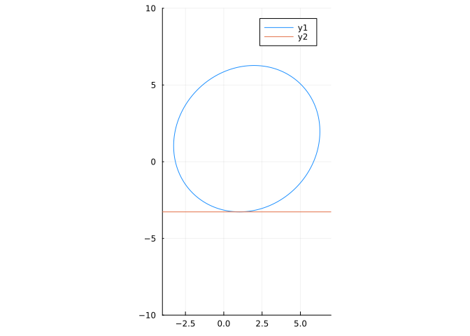
If you watch the video linked to above, you will see that the surprising fact here is the resting point is such that the angles formed by the rope are the same. Basically this makes the tension in both parts of the rope equal, so there is a static position (if not static, the ring would move and not end in the final position). We can verify this fact numerically by showing the arctangents of the two triangles are the same up to a sign:
a0, b0 = 0,0 # the foci of the ellipse are (0,0) and (3,3)
a1, b1 = 3, 3
atan((b0 - ystar)/(a0 - xstar)) + atan((b1 - ystar)/(a1 - xstar)) # ≈ 0-0.42316792063329345Now, were we lucky and just happened to take \(a=3\), \(b = 3\) in such a way to make this work? Well, no. But convince yourself by doing the above for different values of \(b\).
In the above, we started with \(F(x,y) = L\) and solved symbolically for \(y=f(x)\) so that \(F(x,f(x)) = L\). Then we took a derivative of \(f(x)\) and set this equal to \(0\) to solve for the minimum \(y\) values.
Here we try the same problem numerically, using a zero-finding approach to identify \(f(x))\).
Starting with \(F(x,y) = \sqrt{x^2 + y^2} + \sqrt{(x-1)^2 + (b-2)^2}\) and \(L=3\), we have:
F₁(x,y) = F₀(x,y, 1, 2) - 3 # a,b,L = 1,2,3
implicit_plot(F₁)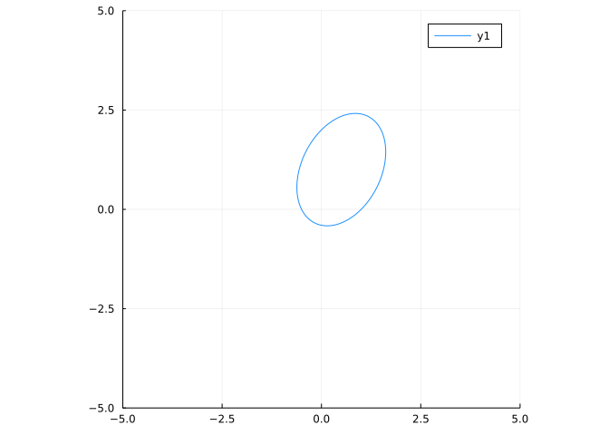
Trying to find the lowest \(y\) value we have from the graph it is near \(x=0.1\). We can do better.
First, we could try so solve for the \(f\) using find_zero. Here is one way:
f₀(x) = find_zero(y -> F₁(x, y), 0)f₀ (generic function with 1 method)We use \(0\) as an initial guess, as the \(y\) value is near \(0\). More on this later. We could then just sample many \(x\) values between \(-0.5\) and \(1.5\) and find the one corresponding to the smallest \(t\) value:
findmin([f₀(x) for x ∈ range(-0.5, 1.5, length=100)])(-0.4142135621686101, 33)This shows the smallest value is around \(-0.414\) and occurs in the \(33\)rd position of the sampled \(x\) values. Pretty good, but we can do better. We just need to differentiate \(f\), solve for \(f'(x) = 0\) and then put that value back into \(f\) to find the smallest \(y\).
However there is one subtle point. Using automatic differentiation, as implemented in ForwardDiff, with find_zero requires the x0 initial value to have a certain type. In this case, the same type as the “x” passed into \(f(x)\). So rather than use an initial value of \(0\), we must use an initial value zero(x)! (Otherwise, there will be an error “no method matching Float64(::ForwardDiff.Dual{...”.)
With this slight modification, we have:
f₁(x) = find_zero(y -> F₁(x, y), zero(x))
plot(f₁', -0.5, 1.5)
The zero of f' is a bit to the right of \(0\), say \(0.2\); we use find_zero again to find it:
xstar₁ = find_zero(f₁', 0.2)
xstar₁, f₁(xstar₁)(0.146446609406726, -0.4142135623730952)It is important to note that the above uses of find_zero required good initial guesses, which we were fortunate enough to identify.
Is \((1,1)\) on the graph of
\[ x^2 - 2xy + y^2 = 1? \]
For the equation
\[ x^2y + 2y - 4 x = 0, \]
if \(x=4\), what is a value for \(y\) such that \((x,y)\) is a point on the graph of the equation?
For the equation
\[ (y-5)\cdot \cos(4\cdot \sqrt{(x-4)^2 + y^2)} = x\cdot\sin(2\sqrt{x^2 + y^2}) \]
is the point \((5,0)\) a solution?
Let \((x/3)^2 + (y/2)^2 = 1\). Find the slope of the tangent line at the point \((3/\sqrt{2}, 2/\sqrt{2})\).
The lame curves satisfy:
\[ \left(\frac{x}{a}\right)^n + \left(\frac{y}{b}\right)^n = 1. \]
An ellipse is when \(n=1\). Take \(n=3\), \(a=1\), and \(b=2\).
Find a positive value of \(y\) when \(x=1/2\).
What expression gives \(dy/dx\)?
Let \(y - x^2 = -\log(x)\). At the point \((1/2, 0.9431...)\), the graph has a tangent line. Find this line, then find its intersection point with the \(y\) axes.
This intersection is:
The witch of Agnesi is the curve given by the equation
\[ y(x^2 + a^2) = a^3. \]
If \(a=1\), numerically find a a value of \(y\) when \(x=2\).
What expression yields \(dy/dx\) for this curve:

E which maximizes the height.The figure above shows a problem appearing in L’Hospital’s first calculus book. Given a function defined implicitly by \(x^3 + y^3 = axy\) (with \(AP=x\), \(AM=y\) and \(AB=a\)) find the point \(E\) that maximizes the height. In the AMS feature column this problem is illustrated and solved in the historical manner, with the comment that the concept of implicit differentiation wouldn’t have occurred to L’Hospital.
Using Implicit differentiation, find when \(dy/dx = 0\).
Substituting the correct value of \(y\), above, into the defining equation gives what value for \(x\):
For the equation of an ellipse:
\[ \left(\frac{x}{a}\right)^2 + \left(\frac{y}{b}\right)^2 = 1, \]
compute \(d^2y/dx^2\). Is this the answer?
\[ \frac{d^2y}{dx^2} = -\frac{b^2}{a^2\cdot y} - \frac{b^4\cdot x^2}{a^4\cdot y^3} = -\frac{1}{y}\frac{b^2}{a^2}(1 + \frac{b^2 x^2}{a^2 y^2}). \]
If \(y>0\) is the sign positive or negative?
If \(x>0\) is the sign positive or negative?
When \(x>0\), the graph of the equation is…
There are other packages in the Julia ecosystem that can plot implicit equations.
The ImplicitEquations packages can plot equations and inequalities. The use is somewhat similar to the examples above, but the object plotted is a predicate, not a function. These predicates are created with functions like Eq or Lt.
For example, the ImplicitPlots manual shows this function \(f(x,y) = (x^4 + y^4 - 1) \cdot (x^2 + y^2 - 2) + x^5 \cdot y\) to plot. Using ImplicitEquations, this equation would be plotted with:
using ImplicitEquations
f(x,y) = (x^4 + y^4 - 1) * (x^2 + y^2 - 2) + x^5 * y
r = Eq(f, 0) # the equation f(x,y) = 0
plot(r)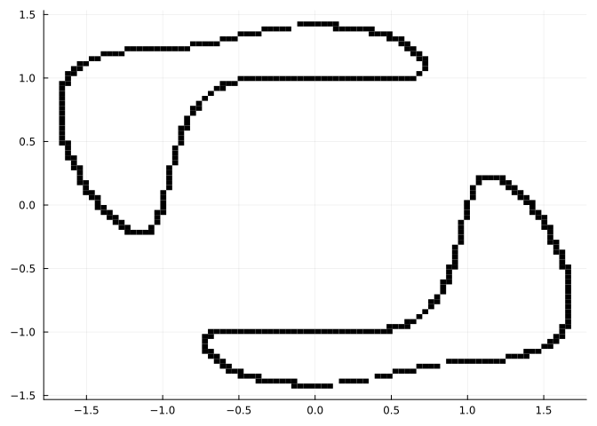
Unlike ImplicitPlots, inequalities may be displayed:
f(x,y) = (x^4 + y^4 - 1) * (x^2 + y^2 - 2) + x^5 * y
r = Lt(f, 0) # the inequality f(x,y) < 0
plot(r; M=10, N=10) # less blocky
The rendered plots look “blocky” due to the algorithm used to plot the equations. As there is no rule defining \((x,y)\) pairs to plot, a search by regions is done. A region is initially labeled undetermined. If it can be shown that for any value in the region the equation is true (equations can also be inequalities), the region is colored black. If it can be shown it will never be true, the region is dropped. If a black-and-white answer is not clear, the region is subdivided and each subregion is similarly tested. This continues until the remaining undecided regions are smaller than some threshold. Such regions comprise a boundary, and here are also colored black. Only regions are plotted - not \((x,y)\) pairs - so the results are blocky. Pass larger values of \(N=M\) (with defaults of \(8\)) to plot to lower the threshold at the cost of longer computation times, as seen in the last example.
The IntervalConstraintProgramming package also can be used to graph implicit equations. For certain problem descriptions it is significantly faster and makes better graphs. The usage is slightly more involved. We show the commands, but don’t run them here, as there are minor conflicts with the CalculusWithJuliapackage.
We specify a problem using the @constraint macro. Using a macro allows expressions to involve free symbols, so the problem is specified in an equation-like manner:
S = @constraint x^2 + y^2 <= 2The right hand side must be a number.
The area to plot over must be specified as an IntervalBox, basically a pair of intervals. The interval \([a,b]\) is expressed through a..b:
J = -3..3
X = IntervalArithmetic.IntervalBox(J, J)The pave command does the heavy lifting:
region = IntervalConstraintProgramming.pave(S, X)A plot can be made of either the boundary, the interior, or both.
plot(region.inner) # plot interior; use r.boundary for boundary